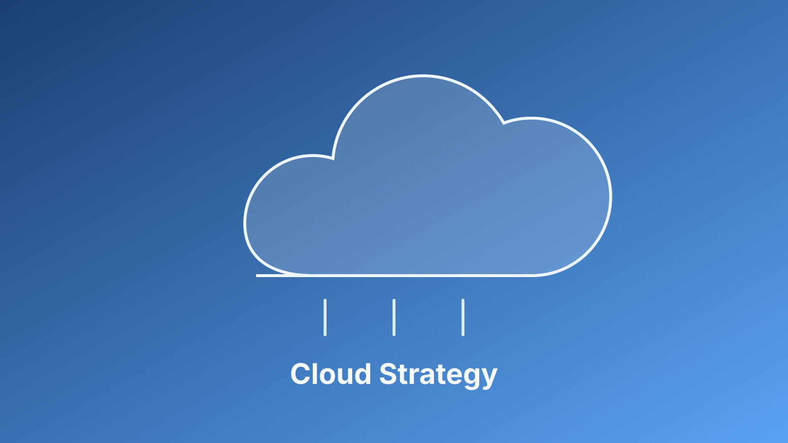

Sequence Migration by Risk, Not Only by Speed
Cloud migration plans fail when every workload is treated as equally urgent. A better approach is tiering systems by data sensitivity, customer impact, and operational dependency. Lower-risk workloads can move first to establish patterns, while high-risk systems move after identity controls, logging, and recovery procedures are proven.
This sequencing protects the business from avoidable exposure and gives teams a realistic runway to improve cloud operations before critical services are affected.
Make Shared Responsibility Operational
Cloud providers secure core infrastructure, but customers remain responsible for access, configuration, and data governance. The shared responsibility model should be reflected in ownership maps, not just architecture diagrams.
I advise leaders to review two dashboards together: delivery velocity and control health. If one improves while the other degrades, risk is accumulating. Strong cloud migration strategy is not slow strategy; it is disciplined strategy that protects execution quality as the organization scales.
For executive leaders, the practical next step is to translate these ideas into a standing monthly operating review: one section for risk movement, one for remediation ownership, and one for measurable outcomes. This keeps technical work tied to business decisions and helps teams improve consistently rather than react episodically. Programs that use this rhythm usually see faster escalation, clearer accountability, and stronger trust across engineering, operations, and compliance stakeholders.